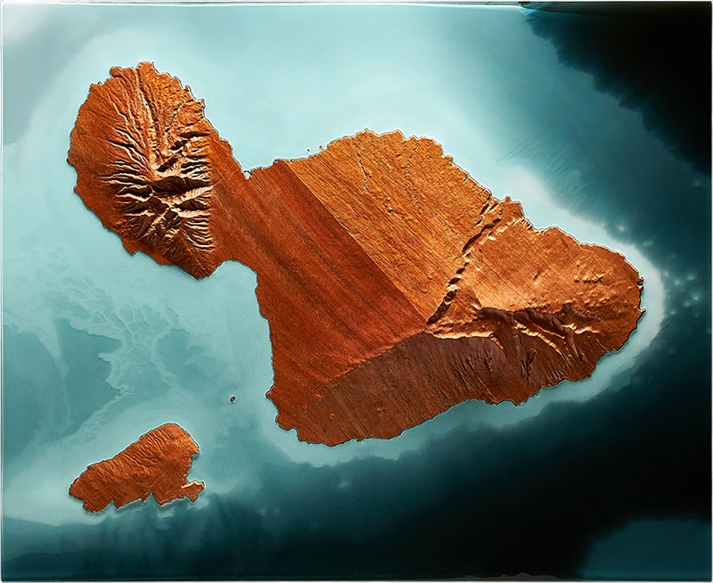
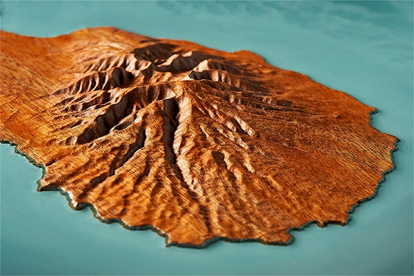
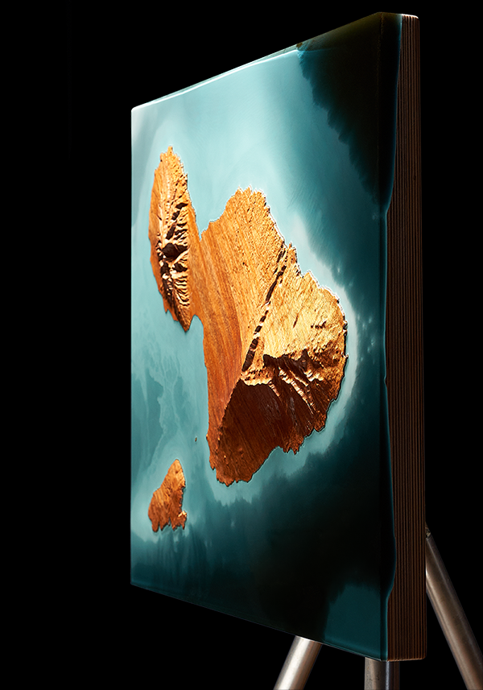

The Valley Isle
Maui, Hawaii
Relief of Maui, sculpted in Hawaiian koa and set within frameless translucent resin. The wood follows Haleakalā, Mauna Kahālāwai, and the central valley between them. Resin extends Pacific bathymetry beyond the shoreline, revealing channels, slopes, and surrounding ocean floor.
Shaping of Place
Maui formed through the meeting of two volcanic masses, Haleakalā to the east and Mauna Kahālāwai to the west. Mauna Kahālāwai, the older western form, is deeply weathered by wind, rain, and time. Haleakalā, the younger eastern form, remains an active volcanic system, rising from the ocean floor into one of Earth’s tallest mountain forms. Between them, the central valley marks the place where lava flows joined the two volcanoes into a single landmass.
Beyond the shoreline, Maui continues downward into Pacific depth. The surrounding bathymetry reveals the island as the exposed crest of a much larger volcanic structure. Channels, slopes, and submerged contours carry that form outward, allowing land and seafloor to read as one continuous formation.

Maui relief, full composition.

Mauna Kahālāwai detail view.

Frameless resin edge.
A close circle of friends commissioned this piece as a wedding gift for a couple who make Maui home. The island is part of their shared history, a place of adventures, friendship, and memories gathered across visits and years.
Hawaiian koa was chosen to root the work in the same island landscape the gift was meant to honor, connecting the piece to place through both geography and material. Its figure and natural chatoyance suit the island’s landscape, with movement appearing across the carving as light shifts over the surface.
The resin was cast frameless, leaving the island unconfined and suspended beyond a fixed boundary. That openness echoes the friendship behind the gift, a bond shaped by distance and time yet held through memory, return, and shared place.
Artist's Note